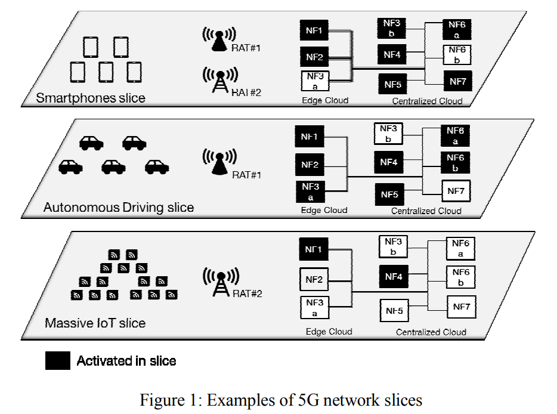
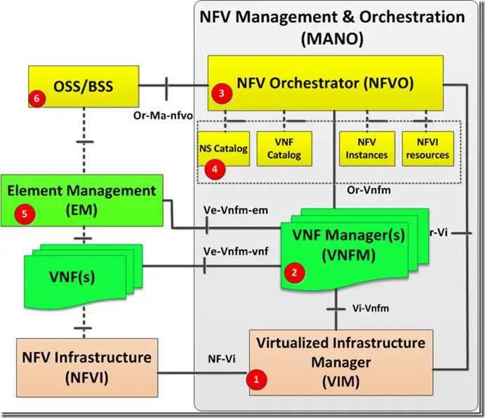
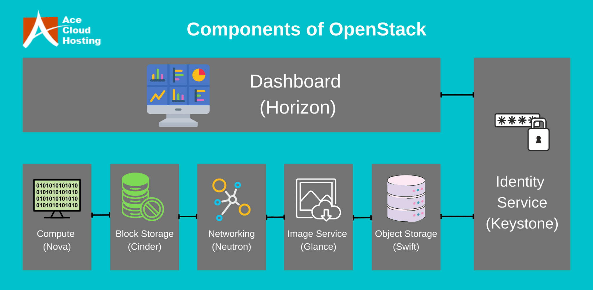
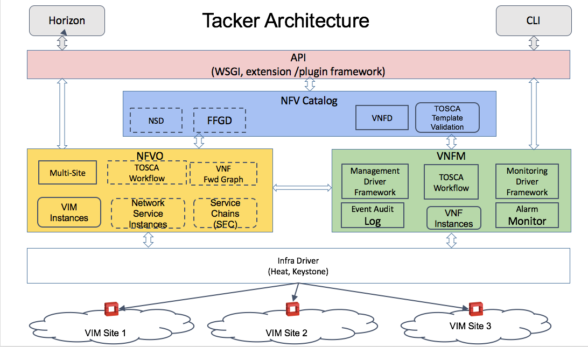
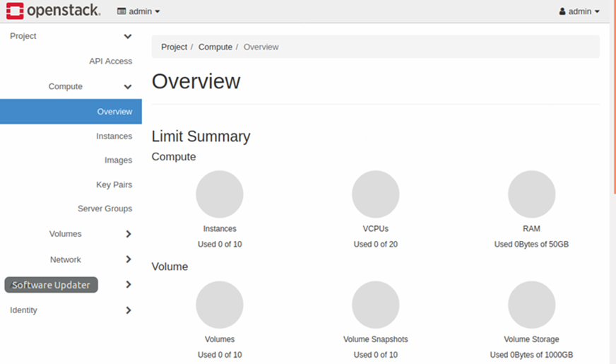

How to deploy a free5GC network slice on OpenStack
Note
Author: Daniel Hsieh
Date: 2023/7/26
What's Network Slicing
Network slicing allows for the creation of multiple logical, isolated, and independent virtual networks that can coexist within a shared physical infrastructure. Each network slice provides dedicated and customized network resources to meet the specific requirements of different services
The main elements of a network slice include:
-
Virtualized Network Functions (VNFs): Each network slice can include a set of virtualized network functions that provide specific network capabilities and services. These VNFs can include functions like routing, switching, firewalling, load balancing, or any other network service required by the slice.
-
Isolation and Resource Allocation: Network slicing ensures the isolation of resources between slices, preventing interference and conflicts. It allows for the allocation of dedicated and optimized resources such as bandwidth, processing power, and storage to each slice based on its specific needs.
-
Orchestration and Management: Network slice orchestration involves the creation, provisioning, and management of network slices. It involves configuring the appropriate VNFs, assigning resources, and establishing connectivity between the different components of a slice.

Take Figure 1 as an example. The first slice is designed for mobile devices such as smartphones. Such slice requires a huge diversity of VNFs, and virtual links with high speed and low latency to support the broadband service of smartphones. In 5G network, Those slices are referred to as eMBB (enhanced mobile broadband) slices.
The second slice is designed for autonomous driving. In such scenario, extremely low latency and high reliability are paramount to ensure the vehicles' operability, smoothness and safety. To achieve low latency, some of the NFs should be deployed close to the access node,i.e. on edge cloud. To achieve high reliability, a NF should have multiple instances on available physical resources to make the slice more fault tolerant. Such slice is referred to as URLLC (Ultra-Reliable Low-Latency Communications) slice.
The third slice is designed for massive IoT. IoT devices are expected to not move and send very small amount of data intermittently. Due to the nature of such devices, functions that handle mobiltiy and always-on connections are not needed. Such slices are referred to as mIoT (massive IoT) slices.
MANO Architecture
In this article, we utilize MANO network function virtualization (NFV) architecture to deploy virtual network function (VNF). It plays the role of creating, deploying, and managing VNFs. MANO consists of three main functional components: NFV Orchestrator (NFVO), Virtualized Infrastructure Manager (VIM), and Virtual Network Function Manager (VNFM).

-
NFVO manages the underlying resource by coordinating VIM and VNFM. It handles tasks such as receiving requests, service instantiation, scaling, termination, and monitoring.
-
VNFM manages the lifecycle of VNF instances. It interacts with the VIM to instantiate, configure, monitor, and terminate VNF instances.
-
VIM is responsible for managing the underlying virtualized infrastructure that hosts the VNFs. It abstracts the physical resources, such as compute, storage, and networking, and provides a unified view to the NFVO. The VIM handles tasks like resource allocation, performance monitoring, fault management, and virtualization management.
For VIM, we use OpenStack, an open-source software that provides IaaS, to utilize the physical resources. For VNFM and NFVO, we use Tacker, a service component of OpenStack, to manage VNFs.
OpenStack
OpenStack is an open-source cloud computing platform that provides a set of software tools for building and managing customized clouds. OpenStack offers a infrastructure-as-a-service (IaaS) solution, enabling organizations to create and manage virtualized resources in a cloud environment. It is designed to be modular and consists of various components that work together to deliver a comprehensive cloud computing platform. Some of the key components include:
-
Nova: Nova is the computing component of OpenStack and serves as the main compute engine. It manages the creation, scheduling, and management of virtual machines (VMs) and provides APIs for controlling and interacting with the compute resources.
-
Cinder: Cinder is the block storage component of OpenStack. It provides persistent storage for virtual machines. With Cinder, users can create and manage volumes that can be attached to instances, allowing for flexible and scalable storage options.
-
Neutron: Neutron is the networking component of OpenStack. It provides a networking-as-a-service (NaaS) solution, allowing users to define and manage network resources. Neutron supports virtual LANs, software-defined networking (SDN), and network function virtualization (NFV), etc.
-
Keystone: Keystone is the identity service component of OpenStack. It provides authentication and authorization services, enabling users to securely access and manage resources within the cloud. Keystone supports multiple authentication mechanisms, including username/password, token-based, and external identity providers.
-
Horizon: Horizon is the web-based dashboard for OpenStack. It provides a user-friendly interface for managing and monitoring the cloud infrastructure. With Horizon, users can perform various tasks, such as launching instances, managing storage resources, and configuring networking options.

OpenStack is highly flexible and customizable, allowing organizations to tailor the cloud infrastructure to their specific needs. It supports multiple hypervisors, including KVM, VMware, and Hyper-V.
Tacker
To enable NFV, we need another service component of OpenStack called Tacker. Tacker is designed to simplify the deployment and lifecycle management of VNFs and network service functions (NSFs) in a cloud infrastructure. It leverages OpenStack's existing components, such as Nova, Neutron, and Heat, to provide a comprehensive solution for network service orchestration.
Tacker provides several key features and functionalities:
-
Service Templates: Tacker uses service templates to define the composition and behavior of network services. These templates describe the VNFs and NSFs involved, their interconnections, resource requirements, etc. Service templates are written using the TOSCA (Topology and Orchestration Specification for Cloud Applications) standard.
-
Lifecycle Management: Tacker automates the entire lifecycle of network services, including provisioning, scaling, healing, and termination. It leverages Heat, OpenStack's orchestration service, to manage the underlying infrastructure resources required by the services and handle dynamic scaling of VNFs based on traffic demands.
-
VNF Manager: Tacker includes a VNF Manager component responsible for managing the lifecycle of VNFs. It interacts with OpenStack's compute and networking services, to instantiate and manage VNF instances.
-
Multi-VIM Support: Tacker supports multiple virtual infrastructure managers to accommodate different cloud platforms and environments. It can interact with OpenStack, VMware vSphere and Kubernetes and so on, enabling operators to deploy network services across heterogeneous infrastructure environments.

Deploy a free5GC Network Slice
-
In our implementation, we install OpenStack and Tacker on two different virtual machines for resource utilization reasons, but in fact, they can be installed on the same virtual machine.
-
we need to install OpenStack on a virtual machine. Specific details and corresponding compatibility can be found on OpenStack official website. Using devstack scripts for installation enables operators to customize the environment based on their needs, such as extra plugins (softwares that extends the functionality of OpenStack environment) and overcommit (allows deploying NFs that require more resource than existing physical resourcce) functionality. Upon completion, a web UI enabled by Horizon can be used to access and operate on your own personalized OpenStack cloud. 
-
Install Tacker on another virtual machine, which requires four OpenStack service components, Keystone, Mistral, Barbican and Horizon. Once the installation is completed, we can register our OpenStack VIM on Tacker using
openstack vim registercommand. -
Create two instances that will be used as images (one for control plane VNFs, one for UPF) for the VNFs that we will create. Then,
sshinto those instances to set up the configurations for the VNFs, such as, installing required packages (go language, mongodb, libtool, etc.) andgit clonefree5GC source code. Once all the configurations are done, use OpenStack dashboard to take snapshots of these instances, which will be used as the images for VNFs. -
Import all the VNF descriptors (VNFD) of the VNFs we need by using
openstack vnf descriptor createcommand. VNFDs should be written in accordance with TOSCA format. TOSCA format allows you to define the virtual links (a virtual network VNFs will be running in) and virtual deployment unit (operation unit of a VNF).
Below is an example of UPF VNFD:
tosca_definitions_version: tosca_simple_profile_for_nfv_1_0_0 description: description node_types: tosca.nodes.nfv.VNF11: requirements: - virtualLink1: type: tosca.nodes.nfv.VL required: true metadata: template_name: free5GCSetup topology_template: substitution_mappings: node_type: tosca.nodes.nfv.VNF11 node_templates: VDU1: type: tosca.nodes.nfv.VDU.Tacker properties: name: free5gc-upf1-VNF image: stage3-up flavor: free5gc availability_zone: nova mgmt_driver: noop key_name: free5gc user_data_format: RAW user_data: | #!/bin/sh cd /home/ubuntu/free5gc/src/upf/build cat > config/upfcfg.yaml <<- EOM info: version: 1.0.0 description: UPF configuration configuration: # debugLevel: panic|fatal|error|warn|info|debug|trace debugLevel: info pfcp: - addr: 192.168.2.111 gtpu: - addr: 192.168.2.111 # [optional] gtpu.name # - name: upf.5gc.nctu.me # [optional] gtpu.ifname # - ifname: gtpif apn_list: - apn: internet cidr: 60.60.0.0/24 # [optional] apn_list[*].natifname # natifname: eth0 EOM #sudo ./bin/free5gc-upfd -f config/upfcfg.yaml CP1: type: tosca.nodes.nfv.CP.Tacker properties: ip_address: 192.168.2.111 management: true requirements: - virtualLink: node: VL1 - virtualBinding: node: VDU1 VL1: type: tosca.nodes.nfv.VL properties: network_name: 5GC vendor: Tacker FIP1: type: tosca.nodes.network.FloatingIP properties: floating_network: public floating_ip_address: 172.24.4.111 requirements: - link: node: CP1 - Import the network service descriptor (NSD) using
openstack ns descriptor createcommand. The NSD should also be written in accordance with TOSCA format. Once all the VNFDs and NSD are all successfully imported, we can useopenstack ns createto deploy the network slice. The VNFs specified in the NSD will also be instantiated along with the network slice. Their instances can be viewed on OpenStack dashboard enabled by Horizon or just useopenstack vnf listto check the status of the VNFs.
Below is an example of NSD
tosca_definitions_version: tosca_simple_profile_for_nfv_1_0_0 description: Import Common Slice VNFDs (already on-boarded) imports: - mongo - nrf - amf - smf - udr - pcf - udm - nssf - ausf topology_template: node_templates: VNF0: type: tosca.nodes.nfv.VNF0 VNF1: type: tosca.nodes.nfv.VNF1 VNF2: type: tosca.nodes.nfv.VNF2 VNF3: type: tosca.nodes.nfv.VNF3 VNF4: type: tosca.nodes.nfv.VNF4 VNF5: type: tosca.nodes.nfv.VNF5 VNF6: type: tosca.nodes.nfv.VNF6 VNF7: type: tosca.nodes.nfv.VNF7 VNF8: type: tosca.nodes.nfv.VNF8 sshinto the VNF instances to make the necessary configuration for each VNF and start the free5GC VNF.- Voila! Now we have a fully functional free5GC network slice.
There are many other ways to set up a network slice. For example, we can deploy VNFs of the same network slice on different VIMs, or we can deploy all the network slices on the same VIM, as long as it is specified in the VNFDs.
About
Hi, my name is Daniel Hsieh. I am a CS major graduate student. My research field is network slicing. If there are any questions about the article, please feel free to contact.
- email: e657shai@gmail.com
Reference
-
https://www.acecloudhosting.com/blog/openstack-the-catalyst-of-the-public-cloud-market/
-
https://telcocloudbridge.com/blog/a-beginners-guide-to-nfv-management-orchestration-mano/
-
https://wiki.openstack.org/wiki/Tacker
-
B. Chatras, U. S. Tsang Kwong and N. Bihannic, "NFV enabling network slicing for 5G," 2017 20th Conference on Innovations in Clouds, Internet and Networks (ICIN), Paris, France, 2017, pp. 219-225, doi: 10.1109/ICIN.2017.7899415.